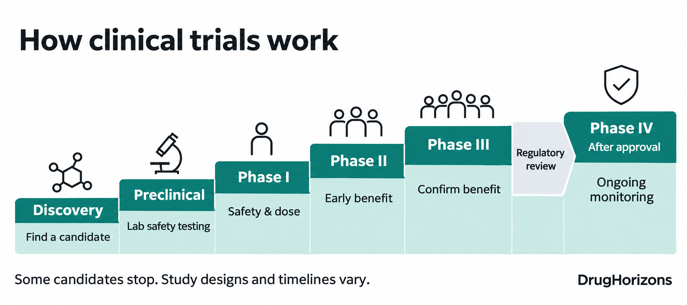

Clinical research workspace
Select a body system, inspect registry records, and open complete trial details.
Body system
01 / SELECTSelect a system to update trial records and research reports.
01 / Trial discovery
Neurological clinical trials
Connecting…Showing newly registered drug and biologic studies by default. A new trial may study an existing medicine.
How clinical trials work
Learning guideFrom a laboratory candidate to evidence in people. Open a stage below to learn its purpose and typical scale.

DiscoveryFind a candidate
Laboratory researchers identify promising treatment candidates. This is not a trial in people.
- Study size
- No human participants
- Typical duration
- Timing varies
PreclinicalPrepare for human studies
Laboratory and animal research examines safety before human testing.
- Study size
- No human participants
- Typical duration
- Timing varies
Phase ISafety & dose
Early human studies examine tolerability and dosing. Cancer studies usually enroll people with cancer.
- Study size
- Typically 20–100 participants
- Typical duration
- Several months
Phase IIEarly benefit & side effects
Studies in people with the condition explore treatment effects and gather further safety information.
- Study size
- Up to several hundred participants
- Typical duration
- Several months–2 years
Phase IIIConfirm benefit & risks
Larger studies evaluate benefit and monitor adverse reactions to support regulatory review.
- Study size
- Typically 300–3,000 participants
- Typical duration
- 1–4 years
Phase IVAfter approval
Post-approval studies continue examining safety and effectiveness in broader use.
- Study size
- Often several thousand participants
- Typical duration
- Timing varies
Typical ranges illustrate drug-development studies, not fixed requirements or a promise of safety or benefit. Sizes and durations vary by condition, therapy, and design; a higher phase does not guarantee approval. Source: FDA clinical research guide.
02 / Reported evidence
Research news & trial reports
Follow therapies through news coverage, research institutions, and sponsor announcements. Reports describe findings at publication; they do not establish current recruitment.
03 / Molecular analysis
Molecular workspace Research tools
Sources & methods
Trial registry records
DrugHorizons retrieves registry records from the ClinicalTrials.gov API on demand. Sponsors submit these records; registry status can lag changes at individual sites. The trial detail view shows the registry update date and labels cached records when a fresh lookup fails.
Research reports
Our curated collection includes news coverage, institutional research reports, and sponsor announcements. Each report identifies its publisher, publication date, source type, and verified trial links where available. It is not an automatic or exhaustive news feed. Multiple reports can discuss the same trial.
Molecular data
PubChem supplies structures, 3D conformers, and calculated descriptors. A 3D conformer is a model, not a measured binding pose. XLogP is calculated. Identity, salts, stereochemistry, and assay conditions matter when comparing compounds.
Evidence & uncertainty
Affinity and clinical effect estimates require sourced evidence. Missing pKa, affinity, and confidence intervals are labeled unavailable rather than estimated. The synthesis notebook contains educational schemes, not validated predictions for the selected drug.
Saved research & privacy
Saved trials stay in this browser’s local storage. They do not automatically synchronize across devices and can become outdated. Opening a saved trial attempts to fetch its current registry record.
Understanding trials
Read the DrugHorizons Trial Guide for stage-by-stage explanations and sources.